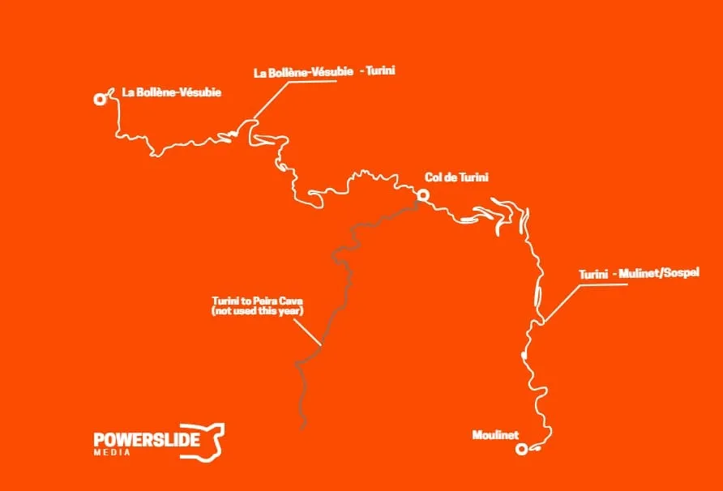
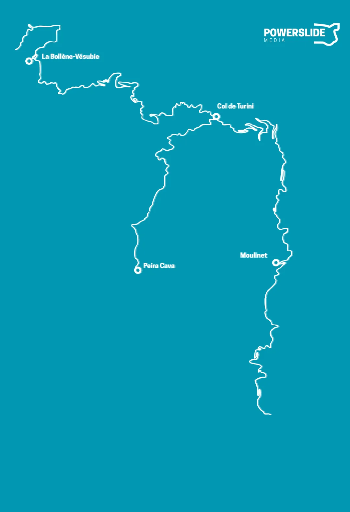
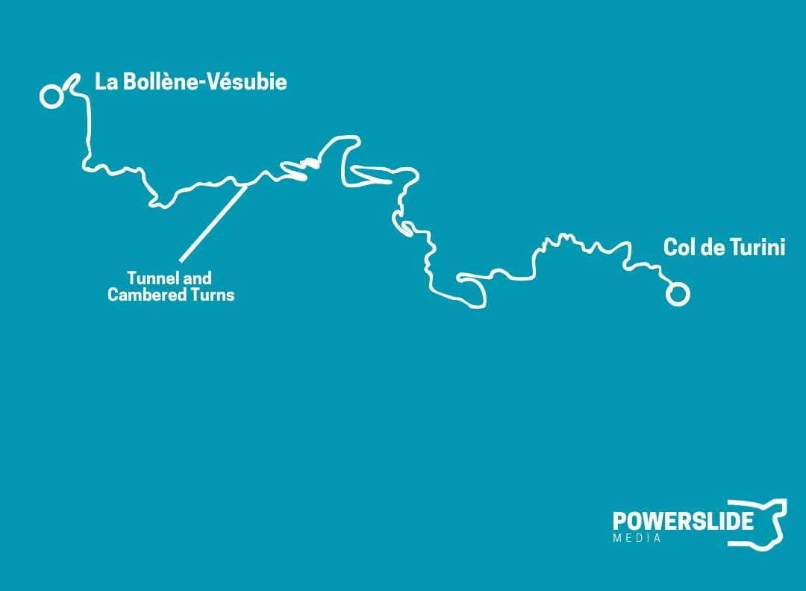
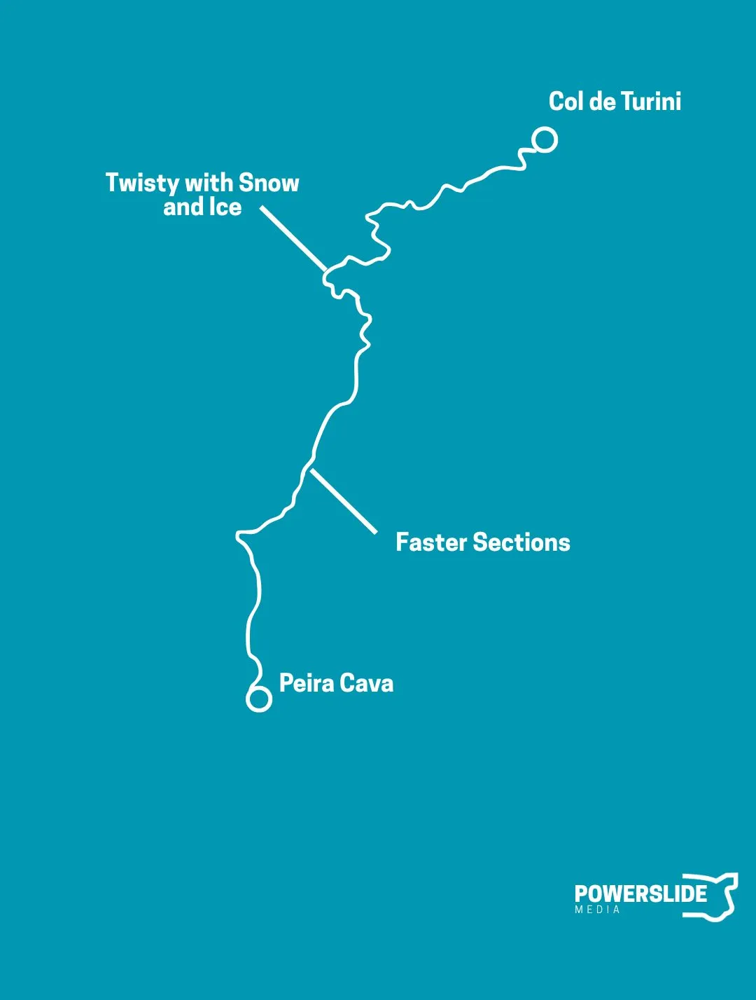
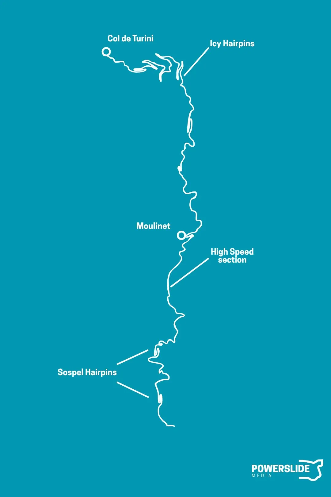
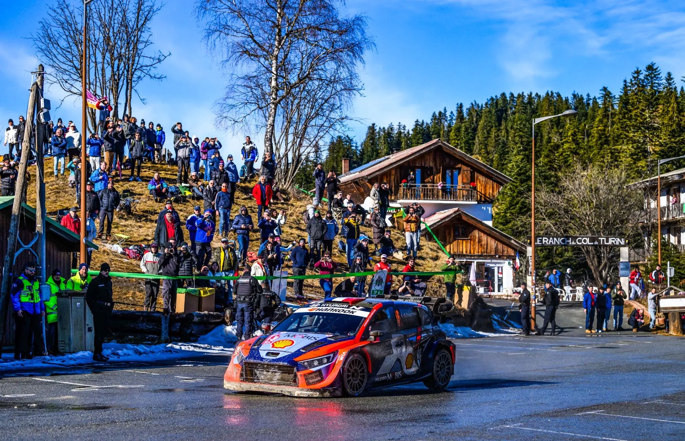
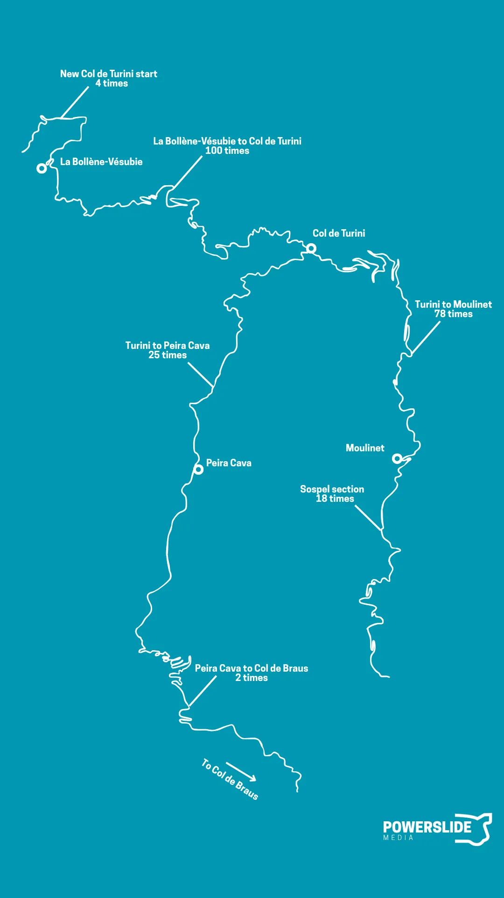

Col de Turini; a Monte Carlo Legend
The Col de Turini is a stage that lives in infamy among rally fans. Since 1973, there have been two editions of the Monte Carlo Rally that did not pass through this famous mountain pass. Over the decades, 106 passes of the stage have been held, with 51 different drivers managing to win this legendary stage. But why is Col de Turini so famous? What drivers have achieved the most success in it, and what is its most used configuration? Well, lets have a look, shall we?

Since before the birth of the World Rally Championship, rally fans have gathered in their hundreds up the Col de Turini mountain pass to watch rally cars in mixed conditions. The stage's reputation was cemented during the 70s and 80s, when at least one pass was in the dark, making for an incredible spectating experience, with fans' flares turning the night into day. This gave the stage a variety of nicknames, including the "night of the long knives" and "Nuit de Turini".
Col de Turini has generally been used under different configurations from three different roads. La Bollène Vésubie to Col de Turini, Peira Cava to Col de Turini and Sospel to Turini. These three different roads make for almost all of the different stages that passed over the famous Col. So lets see what makes them stand out.
La Bollène to Col de Turini

Starting from the village of La Bollène Vésubie and heading to Turini, the road is wide and smooth, with cambered and flowing corners. Shortly after passing through a tunnel, the road becomes more twisty, with the flowing corners being replaced with hairpins and slow-speed turns. As the road climbs uphill, snow and ice start to appear, depending on the weather conditions. Finally, 12km after the village, it reaches Camp d'Argent at a 1600m altitude. From then on, a typical Turini stage can turn right and continue down to Peira Cava, or continue straight onto a road which leads to Moulinet or Sospel.
Col de Turini to Peïra Cava

From the Col to Peira Cava, the road remains initially at a similar altitude, with snow often appearing, as this road is on the opposite side of the mountain and receives little sunlight, which prevents the snow or ice from melting. It's initially twisty and technical, but it becomes faster as it starts heading downhill. This descent can be tricky because melting snow and ice can make conditions very slippery.
Col de Turini to Moulinet and Sospel

The road from Turini to Moulinet, combined with the one from La Bollène, is the one used the most frequently in the rally. After the Col, the stage goes downhill, and is sinuous, with many hairpins and slow speed corners. This road doesn't receive much sunlight, and is oftentimes very icy, depending on the conditions, making the descent extremely slippery. As the road reaches the village of Moulinet, it gets a bit faster, and more flowing.
Since 1999, the test has also used a section past Moulinet, passing through the village and continuing down to Sospel. This stretch of road features a mix of high-speed sections, as well as sequences of hairpins, with stone blocks on the side of the road. As it heads downhill, snow and ice become less of a feature, with the end of the stage being usually at an altitude of 480m, almost 1100 lower than the one from the Col.
Most common configurations of Col de Turini
The most common configuration of a "Col de Turini" test is one that starts from Moulinet, passes through the Col, and finishes in La Bollène Vésubie. It has been used a total of 49 times since 1973, but has not featured in the Monte-Carlo itinerary since 2013. The second most common version of this infamous test will actually be a tie between La Bollène Vésubie - Moulinet (ie, the reverse of the most popular one) and Sospel - La Bollène Vésubie. La Bollène Vésubie - Moulinet was rarely used from 1973 to 1999, with the stage being run a total of five times in that direction. Following the turn of the millennium, it was used five times in the 2000s, and was also last used in 2022. It's set to be the Power Stage of the 2026 edition of Rally Monte-Carlo.
Sospel - La Bollène was the most common version of the Col de Turini stage in the 2000s, with this and its reverse version being used a total of 17 times from 1999 to 2009. It was last used in the WRC in 2015, that being the last time until now that the stage has had a length of over 30km.
Onboard of the Sospel - Turini - La Bollene test from 2002
La Bollène Vésubie - Peïra Cava has actually been the most common version of the stage used since 2010. It's been used ten times since the WRC's return to the principality in 2012. In the 70s, the road from Peïra Cava to Turini was used in the itinerary all by itself as a short stage. This was repeated a total of four times, with an extra one in 1990, where a 3km SSS was held on that road, finishing near the Col.

Last year, the end of rally Power Stage crossed the Col de Turini and continued right, down to Peira Cava
In recent times, a stage which started from La Bollène Vésubie and finished at the top of the Col was used. The stage was run three times in 2023, and once in 2024, with the finish slightly before Camp d'Argent.
Onboard of the 2023 Turini stage
Other roads used in Col de Turini
Apart from these three main roads, the stage has also seen a few others used. In the aforementioned La Bollène Vésubie - Col de Turini test from 2023 and 2024, a new start was used, which was very narrow and broken, featuring tight hairpins and slow corners.
In 2009, in the IRC years, the longest ever version of the stage was used. At 34.68km, the stage started from Col de Braus, and continued past Col de l'Able, La Cabanette, and then continued onto the route of the Peïra Cava - La Bollène Vésubie test.
In 2021, the stage was due to start from Peïra Cava and finish in Moulinet, but had to be removed from the event's itinerary due to massive flooding in the area before the rally.
Below you can see how many times each road has been used as part of a test passing through the mountain pass.

All of the roads that have been used as part of the Col de Turini test, including how many times they've featured as part of a test crossing Turini
The Most Successful Drivers in Col de Turini
Surprisingly, post 1973, Col de Turini's winningest driver is not a Frenchman, but a Spaniard! Carlos Sainz is the driver with the most stage wins here, with 9! Behind him is Bernard Darniche with 8, with the Frenchman also achieving two stage wins in the 1972 edition of the event, before the inaugural WRC season. Third place is a tie between three multiple-time Rallye Monte-Carlo winners. Thierry Neuville, Didier Auriol, and Sebastien Ogier have all topped the time sheets six times in Col de Turini. Ogier's six stage wins include one from the IRC days. Behind the trio is Sebastien Loeb, with just one less.
- Carlos Sainz - 9
- Bernard Darniche - 8
- Sebastien Ogier* - 6
- Thierry Neuville - 6
- Didier Auriol - 6
- Sebastien Loeb - 5
- Jean-Pierre Nicolas - 4
- Petter Solberg - 3
- Walter Rohrl - 3
- Sandro Munari - 3
- Tommi Makinen - 3
- Francois Delecour - 3
- Bjorn Waldegard - 2
- Ari Vatanen - 2
- Henri Toivonen - 2
- Stephane Sarrazin* - 2
- Bruno Saby - 2
- Kalle Rovanpera - 2
- Markko Martin - 2
- Freddy Loix - 2
- Francois Duval - 2
- Jean-Claude Andruet - 2
The Most Successful Nations in Col de Turini
Unsurprisingly, French drivers have had the most success up the Col, with 45 stage wins among 16 different drivers. Behind the locals are the Finns, with 17 stage wins scored by 11 different crews. Belgians have 11 Turini wins, by Neuville, Loix, Thiry and Duval.
- France - 45
- Finland - 17
- Belgium - 11
- Spain - 9
- Italy - 9
- Germany - 4
- Sweden - 4
- Norway - 4
- Austria - 1
- Czechia - 1
- United Kingdom - 1
Drivers who have won the stage multiple times in the same year
- Bjorn Waldegard - 1976
- Jean-Pierre Nicolas - 1978
- Bernard Darniche - 1979 (x4), 1981
- Jean-Claude Andruet - 1983
- Ari Vatanen - 1985
- Henri Toivonen - 1986
- Timo Salonen - 1988
- Didier Auriol - 1989
- Carlos Sainz - 1990, 1991
- Tommi Makinen - 2002
- Petter Solberg - 2002
- Markko Martin - 2004
- Sebastien Loeb - 2006
- Francois Duval - 2008
- Thierry Neuville - 2020
- Kalle Rovanpera - 2023
Notable drivers without stage wins in Col de Turini
- Marcus Gronholm
- Juha Kankkunen
- Jari-Matti Latvala
- Richard Burns
- Elfyn Evans
- Hannu Mikkola
- Jean Ragnotti
- Dani Sordo
Closing thoughts
Col de Turini is certainly a legend of the sport, and will continue to be an integral part of the Monte-Carlo Rally for years to come. My personal favourite configuration of the stage would have to be La Bollene to Sospel, and I hope we get to see it again in the WRC. I wouldn't mind if it used the start seen in the 2023 and 2024 editions. Lets see what the stage has in store for us in 2026, and hopefully it's more wintery than recent times.
What is your favourite version of Col de Turini, and what is your favourite memory from that stage?